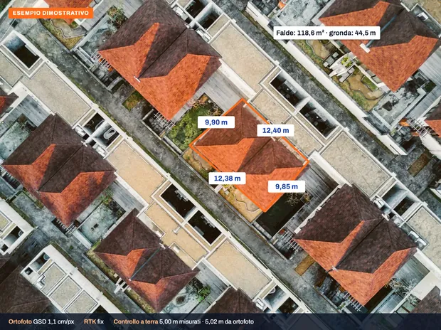
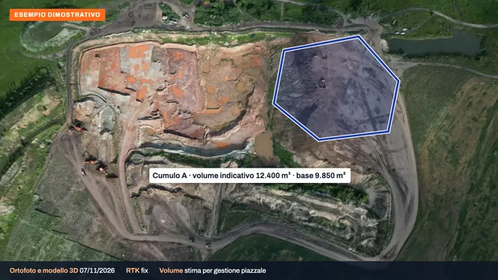
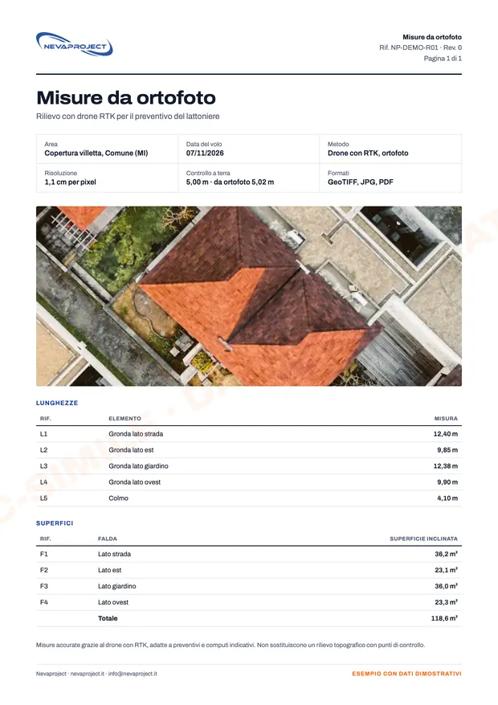

Per chi.
Per chi deve fare un preventivo o seguire un lavoro e ha bisogno di misure senza salire o percorrere l'area a piedi.
- Lattonieri e imprese edili: misure delle falde per il preventivo
- Imprese e direttori lavori: ortofoto di avanzamento del cantiere
- Cave, piazzali e magazzini all'aperto: stima dei volumi dei cumuli
- Installatori di impianti: superficie disponibile sul tetto
- Studi tecnici: base fotografica georeferenziata
Come funziona.
Richiesta
Area, cosa misurare e in che formato. Controlliamo zone di volo e accessi e mandiamo il preventivo con la data di consegna.
Volo con RTK
Voliamo con le correzioni RTK in tempo reale e prendiamo a terra una lunghezza di controllo con il metro o il laser.
Elaborazione e consegna
Ortofoto, misure e, se richiesti, volumi indicativi o nuvola di punti, nei formati concordati.
Cosa riceve.
- Ortofoto georeferenziata
- Misure di lunghezze e superfici
- Volumi indicativi dei cumuli
- PDF con le misure
- Nuvola di punti su richiesta
Ortofoto in GeoTIFF e JPG, misure in PDF; altri formati da concordare prima del volo.
Quanto sono precise le misure. Misure accurate grazie al drone con RTK; non sostituiscono un rilievo topografico. A ogni lavoro confrontiamo una lunghezza presa a terra e la riportiamo nella scheda.
Rilievi topografici con punti di controllo
Per cantieri, cave e contabilità lavori, quando serve la precisione di un topografo, lavoriamo in collaborazione con un geometra abilitato. Su preventivo.
Esempi di consegna.
Ecco cosa riceve. Clicchi su un'immagine per ingrandirla.

Ortofoto con le misureLati e superfici delle falde, con il controllo a terra.

Volumi dei cumuliStima del volume per la gestione del piazzale.

PDF con le misureLunghezze e superfici pronte per il preventivo.


Esempi dimostrativi su foto d'archivio: indirizzi e dati sono a titolo illustrativo.
Prezzi.
Prezzi di partenza e finali, IVA non applicata (regime forfettario).
| Servizio | Prezzo |
|---|---|
| Rilievo con drone RTKfoto georeferenziate e misure principali | su preventivo |
| Mappa elaborataortofoto, superfici e volumi indicativi | su preventivo |
| Rilievo topografico con geometracon punti di controllo a terra | su preventivo |
- Trasferta inclusa fino a 60 km dalla base; oltre, su preventivo.
- Se il giorno fissato piove o c'è troppo vento, spostiamo il volo senza costi.
- Pagamento con POS o link di pagamento, con fattura elettronica.
Chi vola.
Dieci anni di voli
Oltre 3.000 impianti fotovoltaici ispezionati in tutta Italia, per aziende dell'energia e studi tecnici.
In regola con ENAC
Operatore registrato, pilota con attestato A2 e categoria Specific (STS). Ogni lavoro è verificato prima sulle zone di volo D-Flight e secondo le regole ENAC.
Voli assicurati
Polizza di responsabilità civile per i voli con drone.
Domande frequenti.
Quanto sono precise le misure?
Le misure sono accurate grazie al drone con RTK, ma non sostituiscono un rilievo topografico. A ogni lavoro confrontiamo una lunghezza presa a terra con il metro o il laser e la riportiamo nella scheda.
Fate i volumi dei cumuli?
Sì, come stima per la gestione di piazzali e magazzini. Per la contabilità lavori, o quando serve la precisione di un topografo, lavoriamo con il geometra su preventivo.
In che formato arrivano i dati?
Ortofoto in GeoTIFF e JPG e misure in PDF; nuvola di punti e modello 3D su richiesta. Altri formati li concordiamo prima del volo.
Lavorate con un geometra?
Sì: per i rilievi topografici con punti di controllo collaboriamo con un geometra abilitato e prepariamo insieme il preventivo.